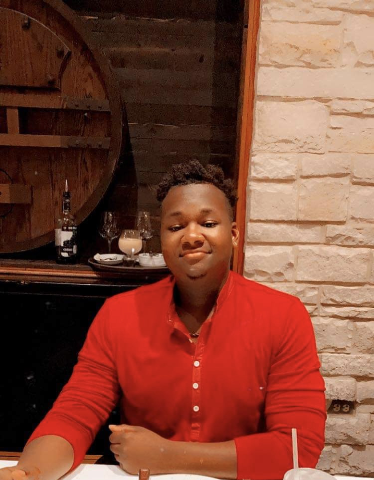

About Me
My name is Tevin Walker. I'm from Silsbee Texas and currently the age of 26 years. I have a wonderful fiancee' and two amazing childern. My hobbies is that I like to play video games with my friends and fiancee' and I also like to work on cars. In my free time i like to do charity in my community by doing funraisers and perticipating in different events to help local childern and the homeless.
I'm currently enrolled in the full stack coding program at the University of Austin at Texas. I signed up for the full stack develepor program so I can learn the front and backend of coding that way I could have knowledge of working either or both ends. I'm taking the full stack course course to improve and showcase my coding skills. I want to make this career change to have a better work platform that i will enjoy and also be able to better support my family.